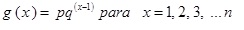

Distribucion geometrica:
La distribucion de probabilidad geometrica se encuentra estrechamente relacionada con la distribucion binomial,
solo que responde a la condicion de que el número de ensayos o pruebas independientes no es fijo.
En este sentido, Badii y Castillo (2009) argumentan que si se interesa el numero x de pruebas hasta la observacion del primer exito,
entonces x posee una distribucion de probabilidad geometrica. Como elemento distintivo, es posible destacar que el numero de pruebas
podria seguir indefinidamente y que x es un ejemplo de variable aleatoria discreta que puede tomar un numero infinito (pero contable) de valores.
Su definicion, de acuerdo con Walpole et. al., (1999; 2012), argumenta que si pruebas independientes repetidas pueden tener como resultado un exito
con probabilidad p y un fracaso con probabilidad q(q=1-p), entonces la distribucion de probabilidad de la variable aleatoria X,
el numero de la prueba en el que ocurre el primer exito es:
